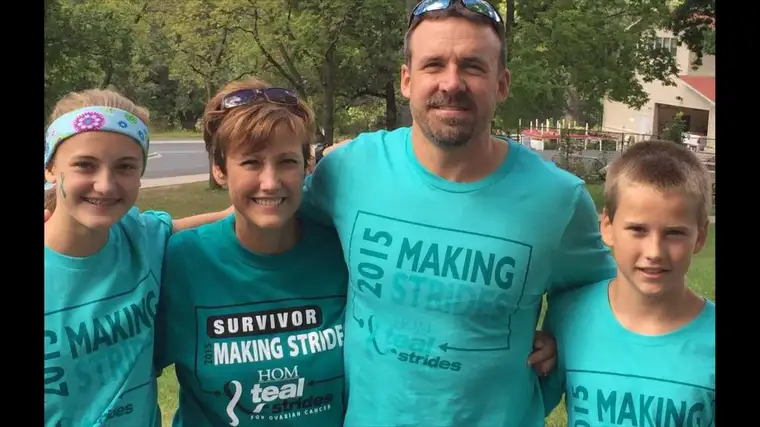

HORACE, N.D. — Like any mother and wife with cancer, Heidi Frie has good reason to be miffed at God. After all, from the beginning, the severity of the disease’s injustice hit hard.
“Ironically, the day after I went into the hospital, Anna was getting confirmed,” Heidi recalls, of the week in June 2011 when pains in her body had become too fierce to ignore.
The family had yet to hear the words “Stage 4 ovarian cancer”; they only knew tumors had been found, and she’d be stuck in the hospital for a few days.
Including a day in which her oldest daughter, then 9, was to don a white dress and receive Jesus in the Eucharist for the first time, after being sealed by the Holy Spirit in confirmation.
Precious moments parents live for were denied Heidi and her husband, Jeremy.
And yet they recall, above all, God’s provisions through extended family and friends who stepped in to fill the void, including neighbors Tanya and Tony Watterud, Anna’s sponsors, along with their daughter Chloe, one of Anna’s best friends.
Tanya also had Anna’s name added to Chloe’s cake, and hosted a party for both at their home. They didn’t know at the time what the Frie family would be facing — only that a mother was ill, and they wanted to help.
It was the beginning of a long letting-go that the Frie family has been experiencing for over five years now, as they’ve adjusted to a life they didn’t ask for, but have accepted — with help.
“I’ve marveled many times about how she does it,” Tanya says. “I still don’t understand where her energy comes from. It’s got to be faith and a mother’s love and a wife’s desire to keep going.”
“God has always provided,” Heidi says, “whether through people doing different things for us, or in those days that are particularly hard, when you catch that break you’ve been waiting for after being tired and worn down.”
“I don’t think I’ve ever felt mad (at God),” she adds. “Maybe frustrated and tired. But I don’t feel like I’ve questioned my faith.”
A time to receive
Peggy Gaynor met Heidi through their mutual work at the North Dakota State University counseling center years ago.
“She cares deeply about people, which is our business as counselors, but … she’s able to combine a very high level of work behavior with a very rich and enjoyable and loving presence,” Peggy says. “Sometimes you’ll find one set of those qualities, but not always together.”
Peggy is among friends organizing an upcoming benefit in honor of Heidi, whose cancer is becoming more resistant to treatments that have worked in the past.
Kara Woodbury Fladland, co-chair of the silent auction subcommittee, says offerings will include items like a signed Carson Wentz Philadelphia Eagles jersey and a Minnesota Vikings football signed by Adrian Peterson.
She says it took some convincing to get the family to agree to the benefit, but she’s glad they finally acquiesced, because it feels good to give back to someone so generous.
“She would rather help other people than have herself be helped, so she was real hesitant at first,” Kara says, adding that both Heidi and Jeremy are “getting better” at receiving.
“This is as much about the community coming together to love them as anything,” Kara says. “How often do you get to have everyone you know in one room? I think she’s sensing now that this is a special time to let people be there for her.”
Kara says she feels optimistic about her friend’s long-term prognosis, believing “Christ is more interested in our spiritual health than in our physical health.”
“I know she’s spiritually healthy … and that she knows where she’s going after she leaves this earth,” she says.
Claiming the blessings
The Fries also try to focus on the blessings of living with a disease they’re hoping one day to banish from their lives.
They’re grateful, for instance, at how their children have stepped up — out of necessity, and out of love.
“They’re better cooks and cleaners, and more accountable than they would have been otherwise,” Jeremy says.
And because balance is so important, Heidi says, she feels fortunate to have retained her job at Concordia College, where she helps run tutoring programs and meets with students wanting to do better academically.
“I’ve always enjoyed my job, even before all this,” Heidi says, adding that not all employers would be as accommodating. “It helps you get outside of yourself for a while.”
Heidi says though the diagnosis has changed the family’s lives in some ways, in other ways, it hasn’t.
“You evaluate and make sure you’re doing the things you want to be doing and enjoying those moments, and at the same time you keep going,” she says. “The floor still needs to be mopped!”
Through long waits and unknowns, patience also has increased, Jeremy says, and allowed them to grow closer as a couple.
“You think about the other person’s feelings more, and what you can do to help them, versus before, you maybe just assumed they’d figure it out on their own,” he says.
“There have been so many good things that have come out of this in crazy ways,” Heidi says. “I wouldn’t say I wouldn’t give up the experience, but at the same time, the relationships within your family, with friends and other relationships mean something a little bit different now.”
If you go
What: Heidi Frie “Hope Springs Eternal” benefit with silent auction and spaghetti dinner
When: 4 to 8 p.m. Sunday, Nov. 20
Where: Sts. Anne & Joachim Church, Fargo
Online: Donations can be made online at www.dakmed.org/lendahand or mailed to “Heidi Frie Benefit” at Gate City Bank, 500 2nd Ave. N., Fargo, ND 58102.
[For the sake of having a repository for my newspaper columns and articles, I reprint them here, with permission, a week after their run date. The preceding ran in The Forum newspaper on Nov. 12, 2016.]